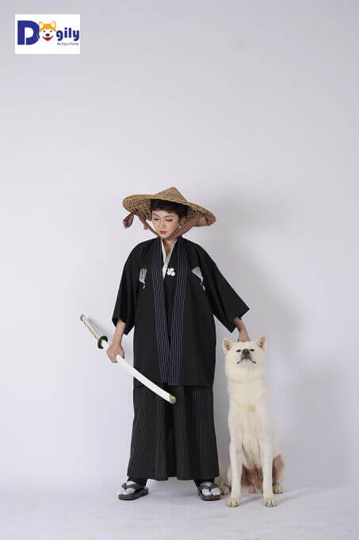

Tại Nhật Bản, giống chó này đôi khi được gọi là Ikken isshu (nghĩa là: chó một người). Chúng không quan tâm đến bất cứ ai ngoại trừ chủ nhân của mình. Giống chó này cũng nổi tiếng về lòng trung thành và sự can đảm. Chú chó Hachiko huyền thoại đợi chủ nhân, giáo sư Ueno trong suốt 9 năm, 9 tháng, 15 ngày là minh chứng rõ nét nhất cho lòng trung thành của giống chó Akita Inu. Chính nguồn cảm hứng từ câu chuyện chú chó Hachiko đã thôi thúc chúng tôi thành lập Dogily. Với sứ mệnh đem đến mỗi gia đình một chú chó trung thành, tuyệt vời như Hachiko.
Yếu tố nguồn gốc và phả hệ:
Giá bán chó akita inu nhập khẩu đương nhiên cao hơn chó sinh tại Việt Nam. Do mặt bằng giá chó tại các trại nước ngoài luôn giữ ở mức rất cao. Và họ luôn chú trọng nâng cao chất lượng con giống, quy trình chăm sóc. Để có thể đảm bảo cho ra những đàn chó con chất lượng. Cộng chi phí vận chuyển hàng không, hải quan, kiểm dịch. Vì vậy, giá chó Akita nhập khẩu về đến Việt Nam thường cao hơn từ 3-5 lần so với chó sinh sản trong nước.
Bằng sự đam mê và tâm huyết với giống chó này. Hiện nay, Dogily.vn đã xây dựng hệ thống Trang trại Akita Inu-Dogily Kennel. Cơ sở trực thuộc Hiệp hội những người nuôi chó giống tại Việt Nam (VKA). Với hàng chục cặp chó Akita giống nhập khẩu châu Âu, Nhật Bản. Có phả hệ á quân thế giới, vô địch châu Âu, liên bang Nga, Ucraina, Ba Lan… Chúng tôi đã đem đến cho các gia đình yêu cún nhiều thế hệ chó thuần chủng và chất lượng.
Bạn có thể mua chó Akita Inu và American Akita (Akita Mỹ) online hoặc tại hệ thống các cửa hàng thú cưng của Dogily Petshop tại Tphcm và Hà nội. Nếu có thời gian, bạn có thể ghé thăm trực tiếp tại trang trại Dogily Kennel tại Vạn Phúc (Thanh Trì, Hà Nội) để lựa chọn mua chó Akita thuần chủng ưng ý nhất.